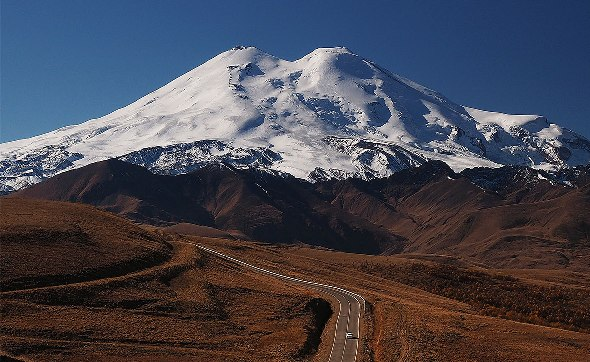

Гора представляет собой конус потухшего вулкана, извергавшегося последний раз в начале нашей эры. Высота западной вершины Эльбруса — 5642 метра, восточной — 5621 метр, вершины разделены глубокой седловиной (5325 метров). По легенде, именно сюда привели аргонавтов поиски золотого руна и здесь был цепями прикован титан Прометей за то, что посмел принести огонь людям.
Гора, сформировавшаяся около миллиона лет назад, состоит из чередующихся слоев лавы, пепла и туфа. Склоны Эльбруса в большинстве своем имеют пологий характер, но начиная с высоты 4000 метров средний угол наклона достигает 35 градусов, а вершины покрыты плотной шапкой многолетнего снега — фирна и вечными льдами. От них во все стороны спускаются несколько десятков ледников общей площадью 134 кв. км. Самые известные —
В мощных ледниках Эльбруса берут начало реки:
которые, сливаясь, образуют Кубань, самую большую реку на Северном Кавказе. Кубань можно назвать дочерью Эльбруса.
Легендарная гора всегда притягивала людей своей таинственной красотой. Северные и западные склоны усыпаны отвесными скальными участками высотой до 700 метров. Восточные и южные — более пологие и ровные. Сверкающие ледники южной стороны Приэльбрусья еще с советских времен облюбовали горнолыжники и альпинисты. Самые протяженные трассы горы: Азау — Старый кругозор — 2,5 км, Старый кругозор — Мир — 2 км. Сезон в Приэльбрусье длится с декабря по март.
Вершина Кавказа - гора Эльбрус